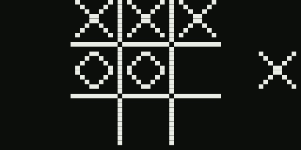

Tic-Tac-Toe
R. Schmidt · DREAMER no. 3 (1980-11) p. 12 1K RAM

Two people play noughts and crosses on one DREAM; the program picks who starts and flashes the winning line. It does not stop you playing on an occupied square.
Keys
Squares are keys 8 9 A / 4 5 6 / 0 1 2; F starts a new game.
Files
| File | Version | Load | Run |
|---|---|---|---|
| Tic-Tac-Toe (Schmidt).c8 | main | 0200-0352 | C000 |
Listing as transcribed (with notes): tic_tac_toe_schmidt.txt
Source
DREAMER no. 3 on archive.org, p. 12 (PDF page 14). Author: R. Schmidt.
Corrections applied
- 034A 3F00 -> 3E00 (erratum in issue 4: light printing).
Open doubts
- Print very faint: 0262 6B17, 0306 6A38, 029E/02FE/030A DAB8 and 0322 132C were reconstructed from the code structure.